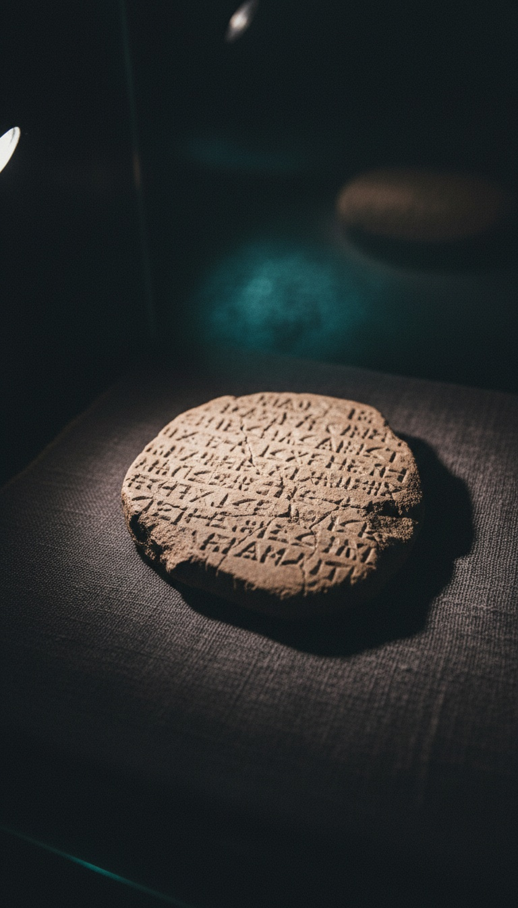

Leviathan had seven heads. A clay tablet from the royal city of Ugarit, excavated at Ras Shamra on the Syrian coast in 1929 and inscribed centuries before the Book of Isaiah, calls the sea monster Lotan "the fleeing serpent, the twisting serpent, the mighty one with seven heads." Isaiah 27:1 copies the first two titles word for word and leaves out the third. The Bible kept the dragon's name and its titles and cut off its heads.
This was a deliberate edit, and the tablet proves it. Nobody invents the same two-part title for a monster twice in neighbouring languages by accident. Isaiah's writers were working from a dragon they already knew. They knew how many heads it had, and they wrote down zero.

A Plow, a Tomb, and a Royal Library
In the spring of 1928 a farmer plowing near Minet el-Beida, the old harbour below the mound of Ras Shamra, struck the stone roof of a buried tomb. The French authorities in Syria sent the archaeologist Claude Schaeffer, who began digging the mound itself in 1929. Within weeks his team broke into the archives of Ugarit, a Bronze Age port city that burned around 1185 BC and was never rebuilt.
The tablets were written in a cuneiform script nobody had ever seen. It used about thirty signs, which made it an alphabet. Hans Bauer, Edouard Dhorme and Charles Virolleaud cracked it in 1930, and the language underneath was a close cousin of biblical Hebrew. Ugarit's library had been buried under ash for three thousand years, beyond the reach of every scribe and council that ever edited scripture.
The Poem That Names Lotan
The most important texts in that library are the Baal Cycle, a long poem about the storm god Baal and his wars against the sea and against death. A scribe named Ilimilku signed several of its tablets during the reign of King Niqmaddu of Ugarit, in the fourteenth century BC. His name, his king and his city are all on the clay.
In the tablet scholars catalogue as KTU 1.5, the death god Mot taunts Baal about his greatest kill: "When you struck Lotan, the fleeing serpent, finished off the twisting serpent, the mighty one with seven heads." A second tablet, KTU 1.3, has the war goddess Anat bragging that she crushed the same seven-headed beast. The number appears in both tablets. Seven heads was the dragon's signature in the Canaanite tradition.
Lotan and Leviathan are the same word. In Ugaritic it is ltn, and in Hebrew it is livyatan. Same root, same monster, same sea.
Isaiah Kept the Titles and Dropped the Heads
Now read Isaiah 27:1 in the King James: "In that day the LORD with his sore and great and strong sword shall punish leviathan the piercing serpent, even leviathan that crooked serpent; and he shall slay the dragon that is in the sea."
In the Hebrew, "piercing serpent" is nachash bariach and "crooked serpent" is nachash 'aqallaton. Ugarit's tablet reads btn brh and btn 'qltn. The words and the order are the same, and the rhythm is the same. Isaiah is quoting the Lotan poem line by line until it reaches the seven heads. At that point the verse swerves into "the dragon that is in the sea" and ends.
| Source | Date | Title one | Title two | Heads |
|---|---|---|---|---|
| Baal Cycle, KTU 1.5 (Ugarit) | 14th century BC | Fleeing serpent | Twisting serpent | Seven |
| Isaiah 27:1 | Centuries later | Piercing (fleeing) serpent | Crooked (twisting) serpent | None given |
| Psalm 74:14 | Temple era | Leviathan | Dragons in the waters | "Heads," plural |
| Revelation 12:3 | 1st century AD | Great red dragon | That old serpent | Seven |
The tablet never passed through an editor. It sat buried for three thousand years where no editor could reach it, and it still counts seven.
The Verse the Knife Missed
Psalm 74 gives the cut away. Verses 13 and 14 read: "Thou didst divide the sea by thy strength: thou brakest the heads of the dragons in the waters. Thou brakest the heads of leviathan in pieces." The psalm says "heads" twice and both times in the plural. The dragon in the psalter still has more than one head.
Bible scholars answer that Isaiah is poetry and poetry compresses, so the missing heads mean nothing. That argument fails on its own terms. Isaiah reproduces both titles in their full Ugaritic order, so the poet had room for the whole formula and kept two of its three parts. The psalm, sung in the same Temple, kept the plural heads. Compression would shorten every version. Here one detail disappears from one verse and survives in the others. That pattern points to a deliberate edit.
The reason is simple. A seven-headed sea dragon is a rival power, an older god Yahweh had to fight. A serpent with no heads is just an animal. Removing the heads turned a cosmic war into pest control and put the result in God's mouth.
The Seven Heads Came Back
The tradition kept the number anyway. Revelation 12:3 describes "a great red dragon, having seven heads and ten horns," and Revelation 13:1 brings a beast up out of the sea with seven heads. Fourteen centuries after Ilimilku pressed his stylus into clay, John of Patmos was still counting the same seven heads.
The Odes of Solomon, a hymnbook of the earliest Christians that never made it into the canon, says it outright in Ode 22: God "overthrew by my hands the dragon with seven heads." It is the same dragon with the same count, and it sits in a book the church left out. You can read why books like that were dropped in our collection of lost books.
Put the receipts side by side. The Ugarit tablet has seven heads. Psalm 74 has heads in the plural. Revelation and the Odes have seven. Isaiah 27:1, the verse most often read from the pulpit, is the only one in the line with no heads at all.
Someone sat with the Leviathan tradition in front of them, copied its titles exactly, and decided the heads had to go. Psalm 74 escaped that edit, and so did Revelation. The Odes of Solomon kept the heads and were left out of the Bible entirely.
If they trimmed a dragon this carefully and signed the trimmed version with God's name, what else in that book was copied from Canaanite clay and cut down? Which verse do you think the knife missed next?
Frequently Asked
Did Leviathan have seven heads?
Yes. The Ugaritic Baal Cycle, written in the 14th century BC and excavated at Ras Shamra in 1929, calls the sea monster Lotan "the mighty one with seven heads," and Lotan is the same name as the Hebrew Leviathan.
Where does the Bible mention Leviathan's heads?
Psalm 74:14 says God broke "the heads of leviathan in pieces," in the plural. Isaiah 27:1 uses the same titles as the Ugarit tablet but gives no heads at all.
What is the Ras Shamra tablet?
It is one of the clay tablets from the royal archives of Ugarit, a Canaanite port on the Syrian coast that was destroyed around 1185 BC. Its Baal Cycle poems were signed by the scribe Ilimilku and are centuries older than the Book of Isaiah.
Is the seven-headed dragon in Revelation the same as Leviathan?
It carries the same count. Revelation 12:3 gives the great red dragon seven heads, and the Odes of Solomon name "the dragon with seven heads." Fourteen centuries after Ugarit, the number was still being written down.
Before you go
7 books the Vatican doesn't want you reading. Free PDF. The texts they cut, with sources. Joined by 300+ Inner Circle members.
No spam. Unsubscribe anytime.
Go deeper
The Hidden Canon, Vol. I: Enoch. Jubilees. Thomas. Mary. Judas. 90 pages, 14 chapters, every receipt cited. The books your Bible quietly removed.
Read the Canon →